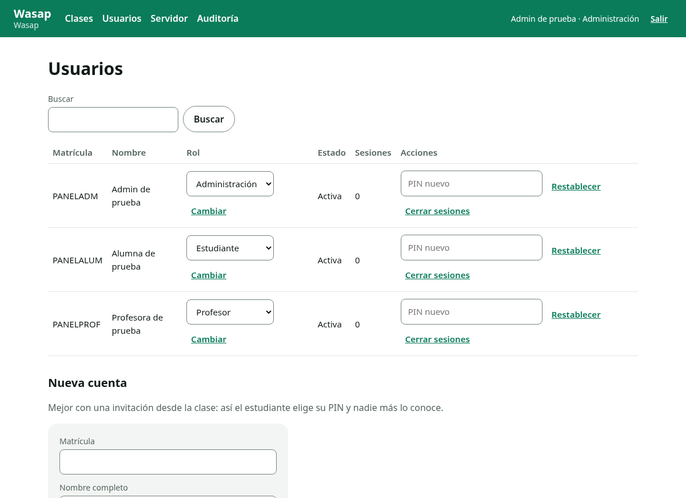
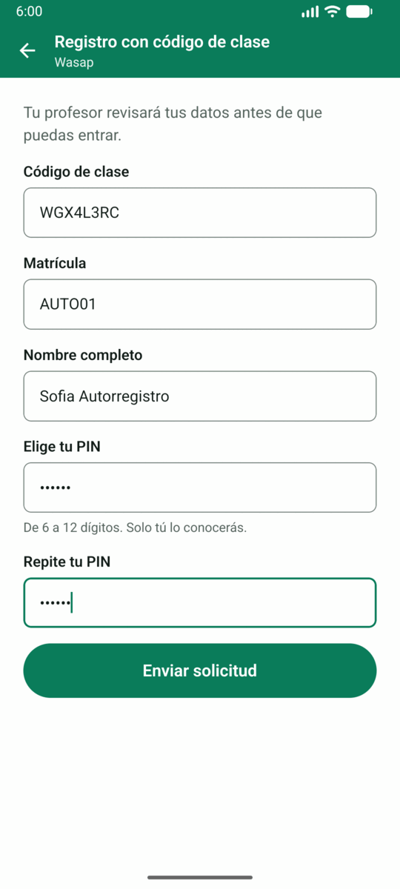
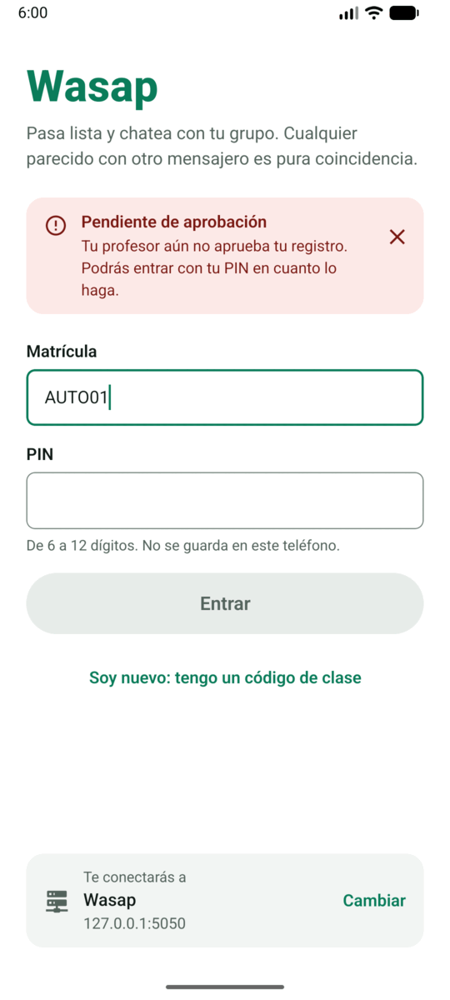
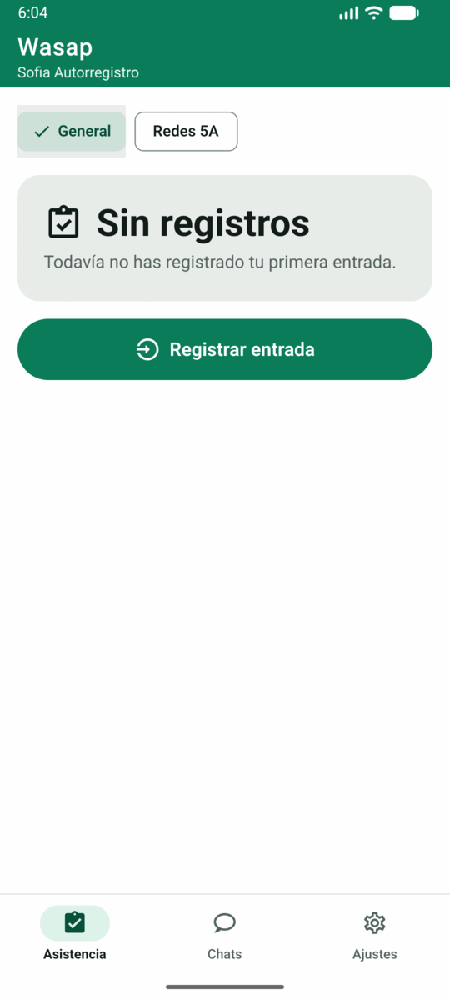
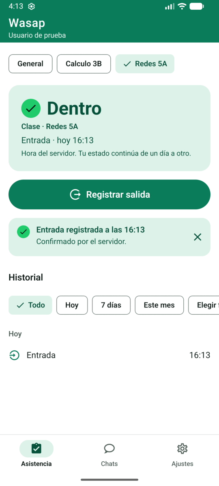
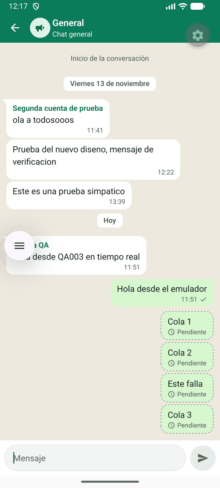

Presenta los dos teléfonos como estudiantes. Deja el emulador abierto con el profesor y el navegador en el panel web. Duración sugerida de la demo en vivo: cinco minutos.
00 00 00 00"type":"demo.mesa"02 / 07
La mesa de la demo
Los tres dispositivos usan el mismo servidor en la Wi‑Fi del aula.
Dos teléfonos
Estudiantes con el APK de Wasap
Pixel 10 emulado
Profesor de Prueba LAN
Computadora
Servidor Kotlin, PostgreSQL y panel web
5050 App por TCP/TLS 5443 Panel por HTTPS

Panel web de Wasap. Captura de referencia.
En el panel abre Servidor. Si el teléfono aún no conoce el servidor, escanea el QR o pega su enlace. Comprueba la IP Wi‑Fi y el puerto 5050. Para la red de prueba actual, la IP era 192.168.1.66. Verifícala antes de presentar.
00 00 00 00"type":"demo.registro"03 / 07
Alta con código de clase
El estudiante elige su PIN. El profesor aprueba el ingreso.

1. SolicitudEl estudiante completa «Soy nuevo».

2. AprobaciónEl profesor revisa la solicitud.

3. Inicio de sesiónEl estudiante entra con matrícula y PIN.
En el Pixel 10 abre Asistencia, selecciona Prueba LAN y entra en Lista de la clase. Usa el código vigente de esa pantalla. En el teléfono, registra una matrícula nueva y aprueba la solicitud en el emulador. Para una cuenta existente, añádela como integrante desde el chat de la clase.
00 00 00 00"type":"demo.palomitas"04 / 07
Palomitas honestas
El servidor confirma cuándo se guardó y cuándo se mostró el mensaje.
Ejemplo interactivo · Chat General
Ya llegué al salón.
09:10Pendiente
TeléfonoServidorOtro teléfono
En General y grupos, la doble marca especifica «Visto por alguien».
Usa este ejemplo para explicar qué significa cada marca. Después envía en General desde el teléfono A mientras B está fuera del chat. Debe quedar una palomita. Abre General en B y deja el mensaje visible. A debe pasar a dos palomitas. Compruébalo en ambos teléfonos con el APK actualizado.
00 00 00 00"type":"demo.asistencia"05 / 07
La lista del profesor
Una entrada desde el teléfono aparece con matrícula y hora en el informe de su clase.
Asistencia › Prueba LAN › Lista de la clase

Estudiante
Profesor
En el teléfono selecciona Prueba LAN y registra la entrada. En el emulador vuelve a abrir la lista o actualiza el informe para mostrar la matrícula y hora. Las capturas corresponden a otra clase de prueba. En la demo en vivo usa Prueba LAN.
00 00 00 00"type":"demo.reenvio"06 / 07
Reenvío tras un corte de Wi‑Fi
Si el mensaje quedó en cola, Wasap vuelve a intentar con el mismo identificador.
Envía un mensaje y corta la conexión.
Reconecta el teléfono y vuelve al chat.
Comprueba que aparece una sola copia.
request_id=mismo UUID→una copia

Mensajes en espera de confirmación
Corta el Wi‑Fi justo después de tocar Enviar. Si el mensaje ya tenía palomita cuando cortaste, el servidor había confirmado el envío. Si ves el reloj, deja que se resuelva después de reconectar. Busca el mismo texto en ambos teléfonos.
00 00 00 00"type":"demo.en-vivo"07 / 07
Demostración en vivo
Dos teléfonos. La lista del profesor en el emulador.
01
Alta de un estudiante
Código de clase, solicitud y aprobación.
02
Mensaje en General
Una palomita al guardar. Dos cuando el otro teléfono lo muestra.
03
Entrada en Prueba LAN
El profesor consulta la matrícula y la hora.
04
Reconexión
El mensaje pendiente se resuelve una sola vez.
Deja esta diapositiva proyectada para pasar a la demo. La vista del profesor se abrió en el Pixel 10 y el servidor LAN respondió con TLS válido. La transición de palomitas entre los teléfonos físicos se comprueba aquí en vivo. Si el entorno no acompaña, vuelve a la diapositiva interactiva.